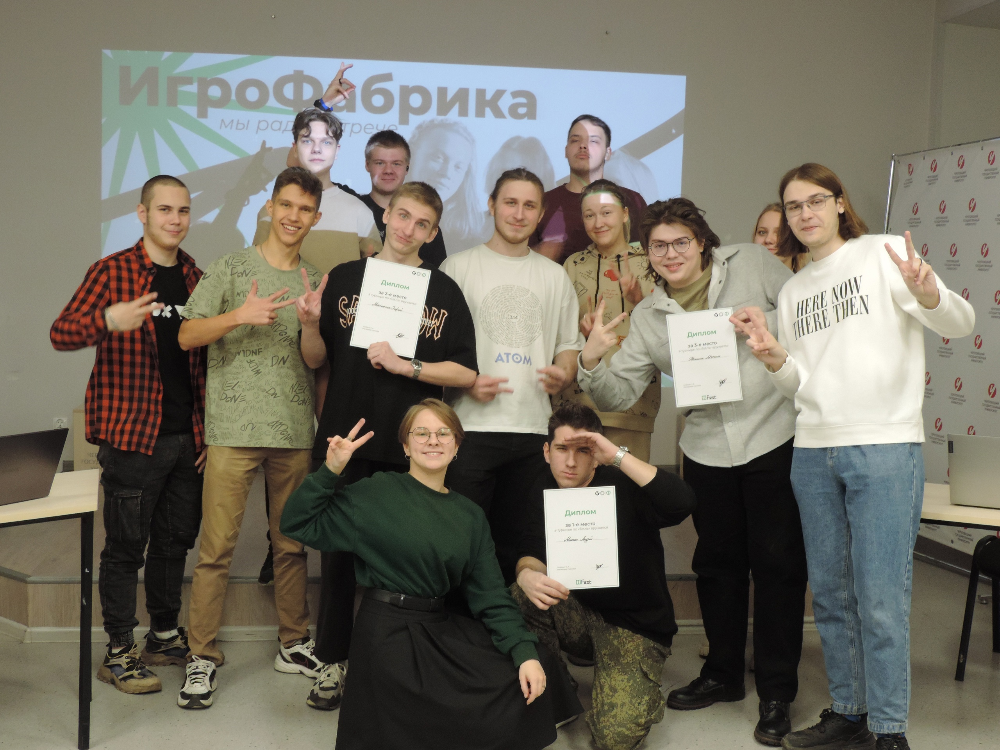

ИгроФабрика? Что это? Если коротко, то это студенческое объединение Череповецкого государственного университета, участники которого увлекаются информационными технологиями.
А если подробнее...
Именно тут студенты практикуются и прокачивают свои навыки в различных сферах: разработка, искусство, геймдизайн и не только. Участники ИгроФабрики - это довольно разносторонний народ! Тут можно встретить не только программистов, но и музыкантов, креативных идейщиков и сценаристов, пиарщиков, фотографов, ответственных организаторов различных мкроприятий и, конечно, любителей поиграть в видеоигры в свободное время. Мы занимаемся разработкой игр разных жанров и ПО для решения поставленных задач. Также мы не забываем про развлечения и любим проводить киберспортивные турниры!